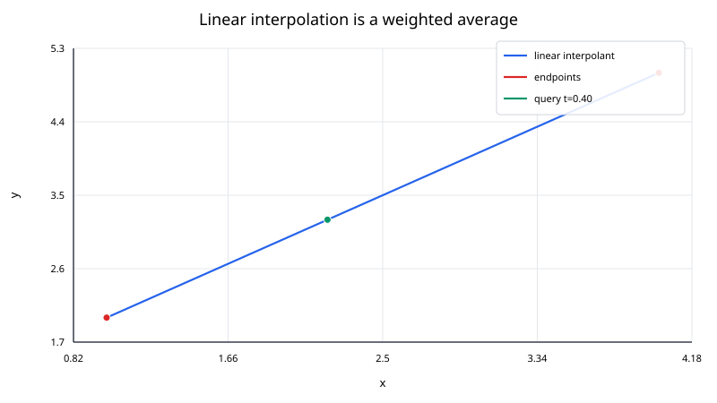
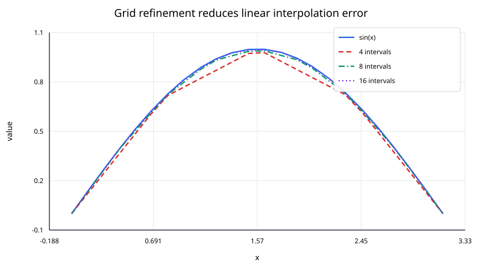

Linear interpolation estimates a value between two known points by assuming the function is a straight line over that interval.
Given two points
$$ (x_0,y_0), \qquad (x_1,y_1), $$
with $x_0\ne x_1$, the interpolated value at a query $x$ is
$$ L(x) = y_0 + \frac{x-x_0}{x_1-x_0}(y_1 - y_0). $$
A particularly useful form introduces the normalized coordinate
$$ t = \frac{x-x_0}{x_1-x_0}. $$
Then
$$ L(x) = (1 - t)y_0 + t y_1. $$
When $x$ lies between the endpoints, $0\le t\le1$, so the result is a weighted average of the endpoint values.

The slope between the two samples is
$$ m = \frac{y_1-y_0}{x_1-x_0}. $$
The line through $(x_0,y_0)$ is therefore
$$ L(x) = y_0 + m(x - x_0). $$
This formula is exactly the same as the weighted form above.
The weights
$$ 1 - t \quad \text{and}\quad t $$
sum to one. That has an important consequence: if $x$ is between $x_0$ and $x_1$, then $L(x)$ lies between $y_0$ and $y_1$. A single linear segment cannot overshoot its two endpoint values.
Take
$$ (x_0,y_0) = (1,2), \qquad (x_1,y_1) = (4,5), $$
and estimate the value at
$$ x = 2.2. $$
First compute the normalized position:
$$ t = \frac{2.2-1}{4-1} = \frac{1.2}{3} = 0.4. $$
Then
$$ L(2.2) = (1 - 0.4)\cdot2 + 0.4\cdot5 = 1.2 + 2 = 3.2. $$
So
$$ \boxed{L(2.2)=3.2}. $$
The calculation can also be read geometrically: the query is $40\%$ of the way from $x_0$ to $x_1$, so its interpolated value is $40\%$ of the way from $y_0$ to $y_1$.
For many ordered data points
$$ x_0<x_1<\cdots<x_n, $$
piecewise linear interpolation applies the same two-point formula on each interval.
If
$$ x_i\le x\le x_{i+1}, $$
then
$$ L_i(x) = y_i + \frac{x-x_i}{x_{i+1}-x_i} (y_{i+1} - y_i). $$
The resulting interpolant is continuous because adjacent segments meet at the shared data points.
However, its derivative is generally discontinuous. On interval $[x_i,x_{i+1}]$,
$$ L_i'(x) = \frac{y_{i+1}-y_i}{x_{i+1}-x_i}, $$
which is constant on that interval. At an interior node, the slope usually jumps from one secant slope to the next.
For a smooth function, shorter intervals usually make the straight-line approximation more accurate.

If $f$ is twice continuously differentiable on $[x_i,x_{i+1}]$, the interpolation error satisfies
$$ f(x) - L_i(x) = \frac{f''(\xi_x)}{2} (x - x_i)(x - x_{i+1}) $$
for some $\xi_x$ in the interval.
Let
$$ h_i = x_{i+1} - x_i. $$
The product
$$ |(x - x_i)(x - x_{i+1})| $$
is largest at the midpoint and equals $h_i^2/4$ there. Therefore,
$$ |f(x) - L_i(x)| \le \frac{h_i^2}{8} \max_{\xi\in[x_i,x_{i+1}]} |f''(\xi)|. $$
This explains the familiar second-order behavior: if the maximum interval width is reduced by roughly a factor of two, the interpolation error for a smooth function often decreases by roughly a factor of four.
For a single query in sorted data:
I. verify that the query lies in the permitted range;
II. locate the interval $[x_i,x_{i+1}]$ containing the query;
III. compute
$$ t = \frac{x-x_i}{x_{i+1}-x_i}; $$
IV. return
$$ (1 - t)y_i + t y_{i+1}. $$
A binary search locates the interval in $O(\log n)$ time. The interpolation itself is constant-time work.
For many sorted queries, a single pass through the nodes and queries can avoid repeating binary searches.
The formula
$$ y_i + t(y_{i+1} - y_i) $$
is often preferable in code to separately constructing a slope and intercept. It works directly with the local interval and keeps the calculation compact.
Important checks include:
When $x_i$ and $x_{i+1}$ are extremely large but very close together relative to machine precision, the difference $x_{i+1}-x_i$ can lose relative accuracy. Rescaling or shifting the coordinate system can help.
If $x$ lies outside $[x_i,x_{i+1}]$, the same formula still produces a number, but then either
$$ t<0 \qquad \text{or} \qquad t>1. $$
The weights are no longer both between zero and one, and the result is linear extrapolation rather than interpolation.
Extrapolation can be reasonable over a short distance when a linear trend is justified, but it should not be treated as automatically reliable.
Linear interpolation is attractive because it is:
Its main limitation is smoothness. The interpolant is only piecewise linear, so corners appear at most interior nodes. If derivatives are important, a cubic spline or another smooth method may be a better choice.
Linear interpolation also ignores curvature inside an interval. A long interval over a highly curved function can produce a noticeable error even though the endpoint values are exact.